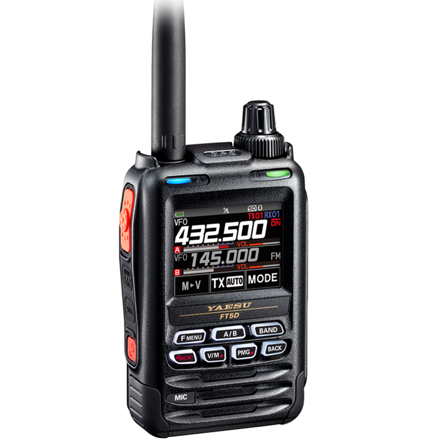

FT5D FRONT PANELInteractive draft

VFO LOCAL
YAESU FT5D / SCU-19

Frequencies and switches change this local draft only. No commands are sent to the radio.
Open your original ADMS-14 .ft5d file or an FT5D SD-card file. Processing stays in your browser.
Names, frequencies and channel options below come from your file. Binary export of edits and radio transfers remain unavailable until the format and checksums are verified. Copying to a draft imports channel number, name, frequency and basic mode only.
| CH | Name | RX MHz | TX MHz | Mode | Step kHz | Shift | Squelch | Tone Hz | DCS | Power | Narrow | Skip code | Banks | Recall |
|---|
Draft channels · select a row to recall it to your active workspace band. CSV is a generic export, not an ADMS-14 file.
| Channel | Name | Frequency MHz | Mode | Actions |
|---|
No memories yet. Store your active VFO to begin.
Editable subset for planning. These values are not read from the radio and do not represent every FT5D menu setting.
Connect the SCU-19 to your computer and the radio’s DATA connector. Install the appropriate Yaesu cable driver.
No port selected.
Port selection only identifies a serial device. This prototype does not open the port, decode radio backups, or send programming data. Verified clone framing, checksums and hardware testing are still required. Live remote tuning is unverified.